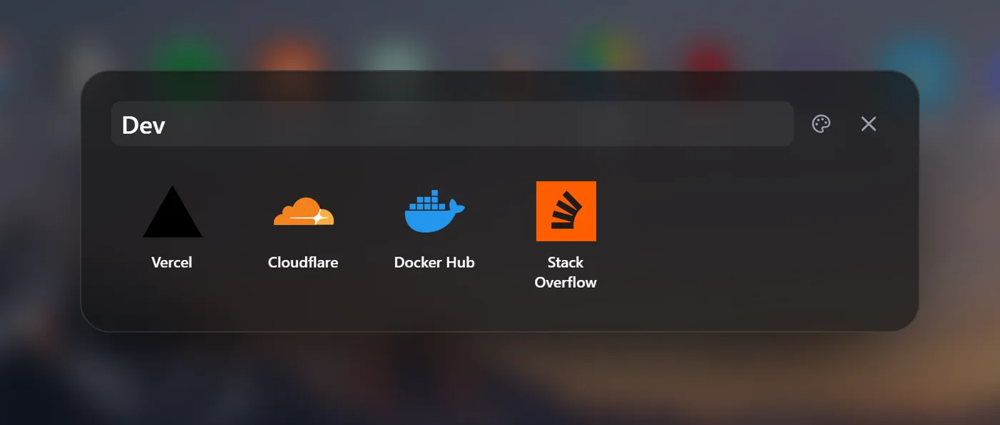
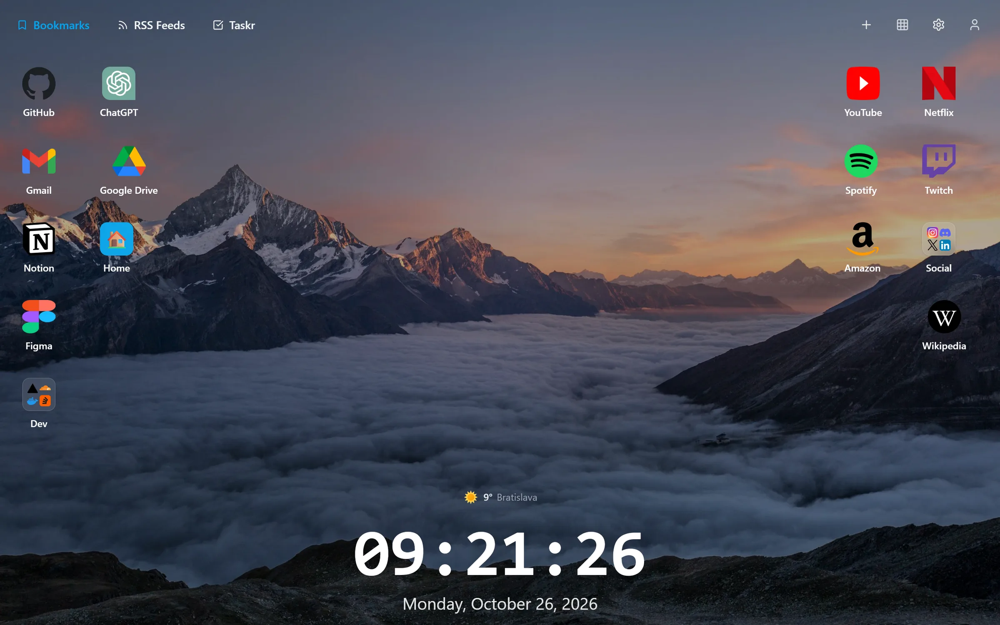
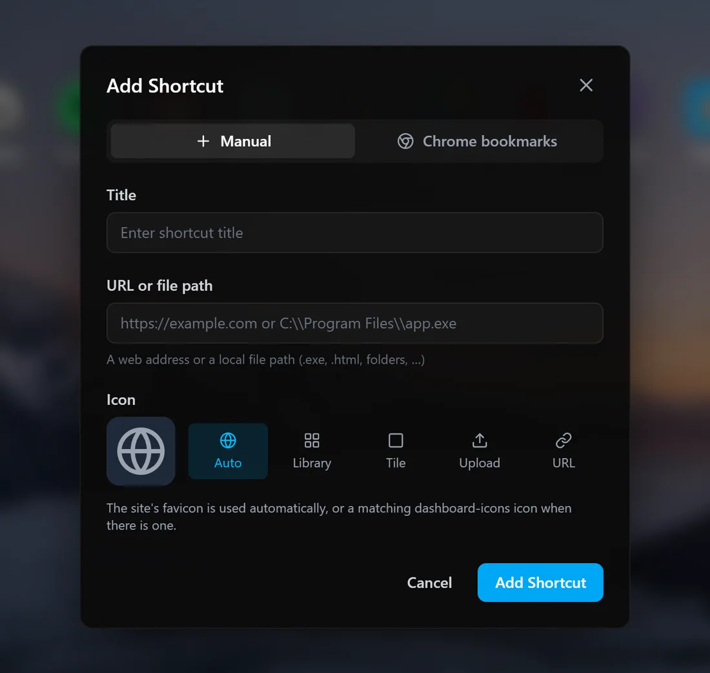
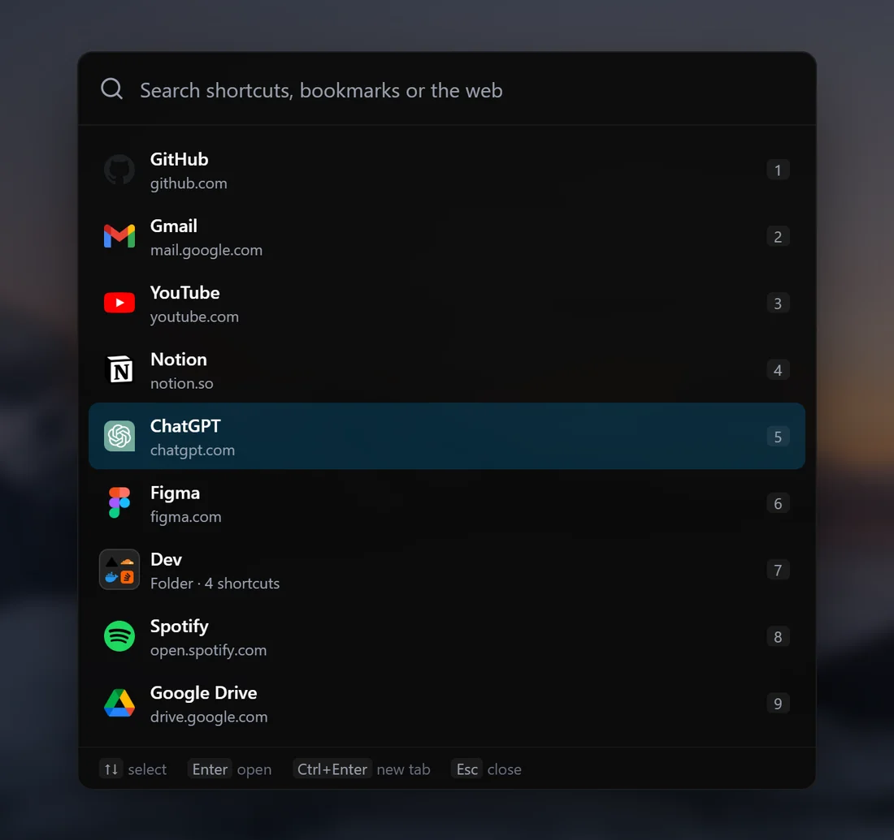
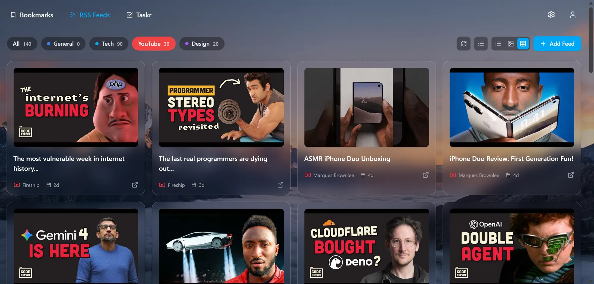
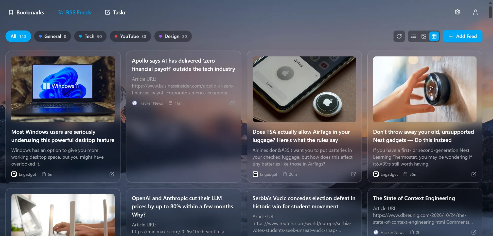
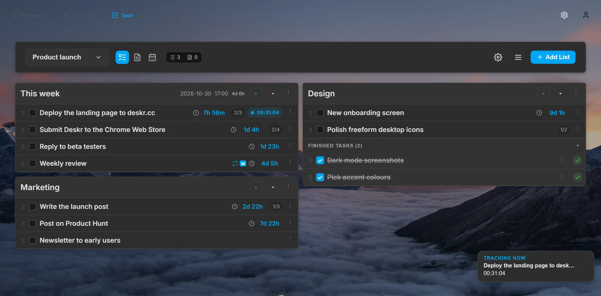
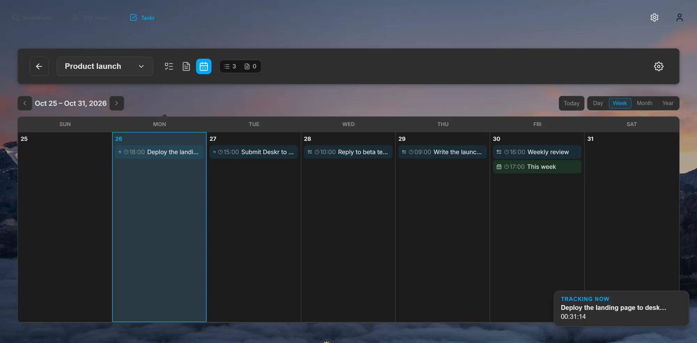
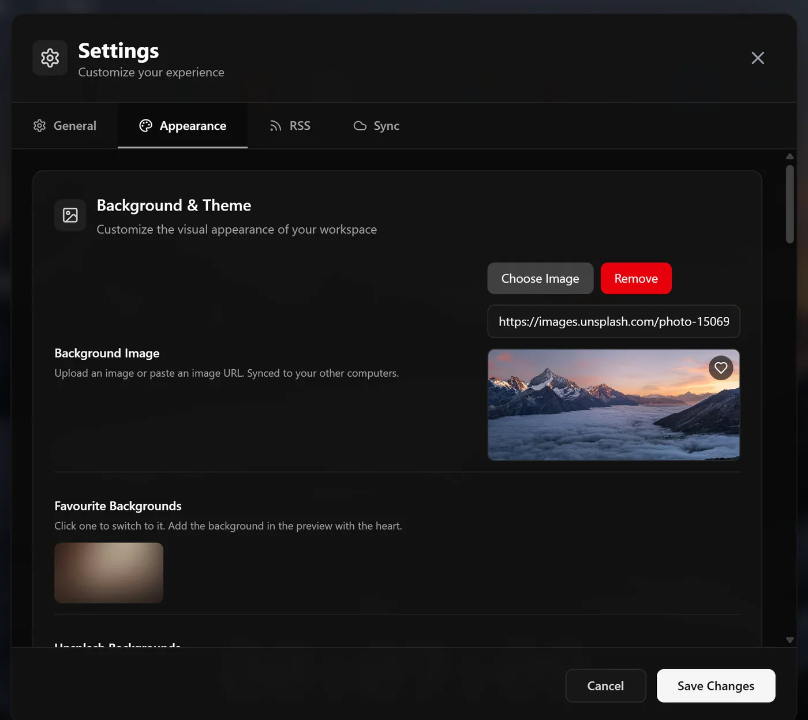
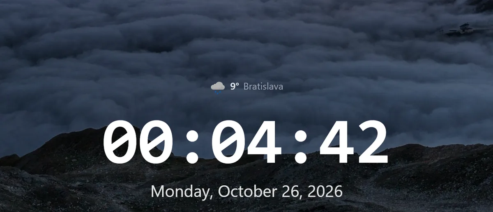

A desktop of shortcuts
Lay icons out in a tidy grid, or switch to freeform and put each one exactly where you want it. Groups keep their spacing when the window changes size.

Deskr turns Chrome's new tab page into a desktop for your shortcuts, RSS feeds, tasks and widgets. It syncs through Chrome Sync, with no account and no server.
For Google Chrome · Takes under a minute to set up

Deskr keeps the sites you use, the news you follow and the work you have to do one keystroke away, every time you open a new tab.
Lay icons out in a tidy grid, or switch to freeform and put each one exactly where you want it. Groups keep their spacing when the window changes size.

Press / for your favourite shortcuts, numbered. Press 1–9 and you're there. Or type to search shortcuts, bookmarks and the web.
RSS and Atom feeds, YouTube channels and Twitch, sorted into categories and checked in the background.
A Taskr tab with your to-do lists, countdown deadlines, subtasks and time tracking, synced live.
A clock and date in the format you like, and the forecast for your city from MET Norway.
Separate desktops for work and home, each with its own shortcuts and feeds.
Find shortcuts to pages that are gone or have moved, right from the desktop menu.
Shortcuts, feeds, profiles and settings follow you to every computer through Chrome Sync.
Build the start page you actually want. Pin the sites you use every day, group the rest into folders and give everything an icon you'll recognise at a glance.

The fastest way to open a site: press / on a new tab and your favourite shortcuts appear, numbered. Press the number and you're there. No mouse, no typing.

You don't even need a new tab. Click the address bar, type dk and a space, then the first letters of a shortcut's name. Deskr suggests matching shortcuts as you type; press Enter to open the best one.
Follow blogs, news sites and creators without another app. Deskr fetches your feeds directly from their sites and shows new articles and videos the moment you open a tab.


Deskr comes with a tab for Taskr, our task manager with countdown deadlines. Sign in or create a free account, and the real Taskr app opens right next to your shortcuts: the same lists, tasks and timers, changes synced live in both directions.


Taskr is free to start and also works on its own at taskr.cc, on desktop and Android, and keeps your workspace readable offline.
The small things you glance at all day, done properly. Choose what's on the desktop and how it looks.


Everything you do often has a shortcut, so the new tab gets you where you're going in a keystroke or two.
Quick searchSearch shortcuts, folders, bookmarks and the web. Or just start typing.
Your top ninePress / to see them numbered, then a number to open one. Shift opens it in a new tab.
From the address barType dk, a space and a name to open any shortcut from any tab.
Add page to DeskrSave the page you're on as a shortcut.
Open in a new tabOpen the selected search result in the background.
Navigate resultsMove through results, and close search when you're done.
Deskr has no account and no server. Your desktop is stored in Chrome and synced by Chrome Sync. Here's every permission it asks for, and every service it talks to.
| Permission | Used for |
|---|---|
| Bookmarks | Importing and searching your Chrome bookmarks |
| Storage | Saving and syncing shortcuts, feeds and settings |
| Alarms | Checking RSS feeds in the background |
| Search | Web search with your default engine |
| Context menus | Add page to Deskr and Alt+Shift+D |
| Identity | Signing in to Google Drive (images) and Taskr |
| Top sites | Optional: most visited sites, asked on first use |
| Site access | Optional: reading feeds and checking links, asked per site |
| Service | For |
|---|---|
| Chrome Sync | Shortcuts, feeds, profiles and settings |
| Google Drive | Uploaded images, in a hidden app folder, only once connected |
| Google favicons | Site icons |
| jsDelivr | dashboard-icons and weather icons |
| MET Norway | The forecast, only with weather turned on |
| Open-Meteo | Finding your city for the weather |
| Unsplash | The background picker |
| Taskr | The Taskr tab, only once you sign in |
| Your feeds | RSS, fetched directly from each site |
Install it from the Chrome Web Store with one click.
Deskr replaces the new tab page right away. Nothing to sign up for.
Import your bookmarks, add feeds, pick a background and arrange the desktop.
No. Deskr has no account and no server of its own. Your shortcuts, feeds, profiles and settings are stored in Chrome and sync through Chrome Sync. A Taskr account is only needed if you want to use the Taskr tab.
Yes. Shortcuts, folders, RSS feeds, profiles and settings sync through Chrome Sync to every computer where you're signed in to Chrome. Uploaded icons and backgrounds can sync through a hidden Google Drive app folder once you connect it.
Yes. You can import single bookmarks or whole bookmark folders as shortcuts, and quick search also finds your Chrome bookmarks.
RSS and Atom feeds, including YouTube channels and Twitch. Feeds are checked in the background every 30 minutes and the toolbar icon shows how many new articles there are.
Each permission backs a feature: bookmarks for import and search, storage for saving and syncing, alarms for background feed checks, search for web search, context menus for Add page to Deskr, and identity for Google Drive and Taskr sign-in. Most visited sites and access to feed sites are optional and asked for only when you use them. See Privacy for the full list.
Taskr is our task manager with countdown timers on every deadline, drag-and-drop lists, recurring tasks, time tracking and notes. Deskr shows it in its own tab once you sign in or create a free account. It's optional: Deskr works fully without it, and you can turn the Taskr tab off in Settings.
Deskr is built for Google Chrome. Chromium-based browsers that install extensions from the Chrome Web Store can usually run it, but Chrome Sync is only available in Chrome.
Shortcuts, feeds, tasks and widgets on one calm, fast page. Ready when you open a tab.